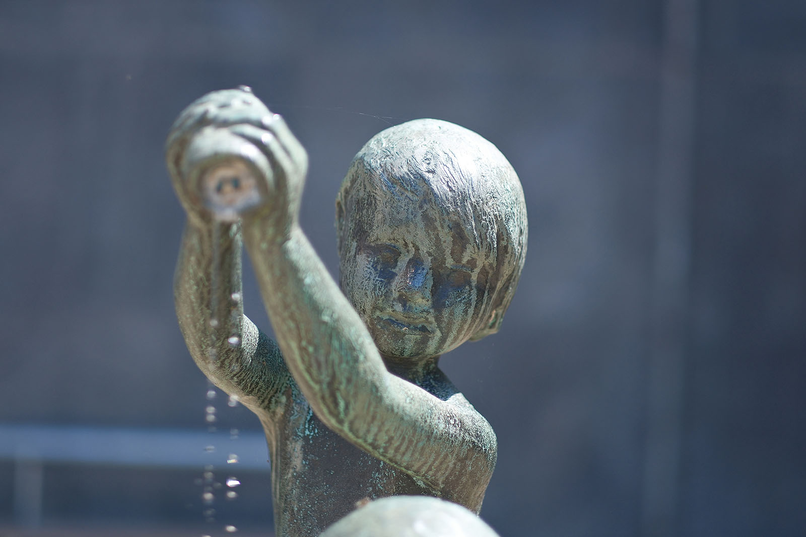
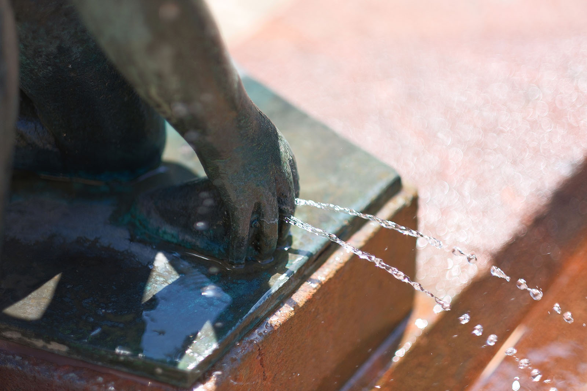
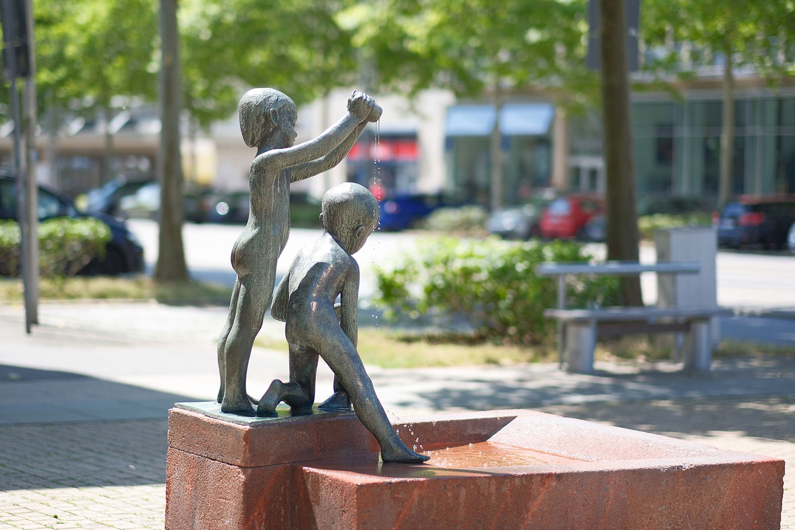
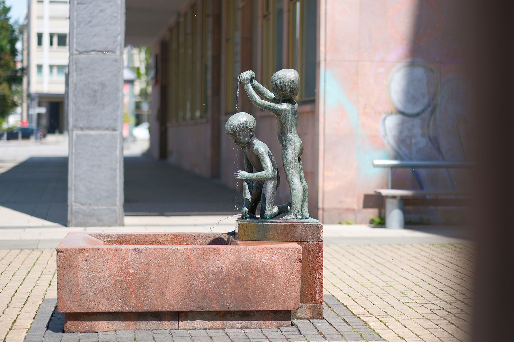
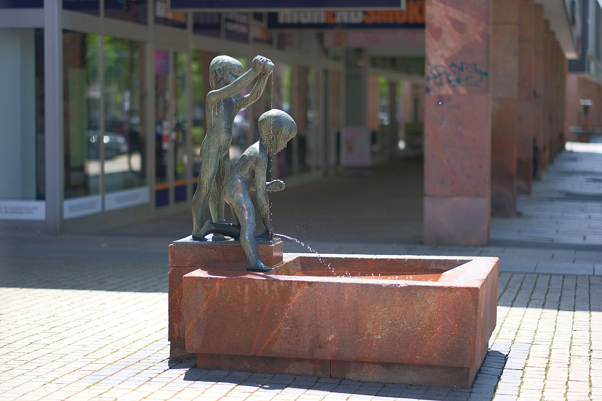
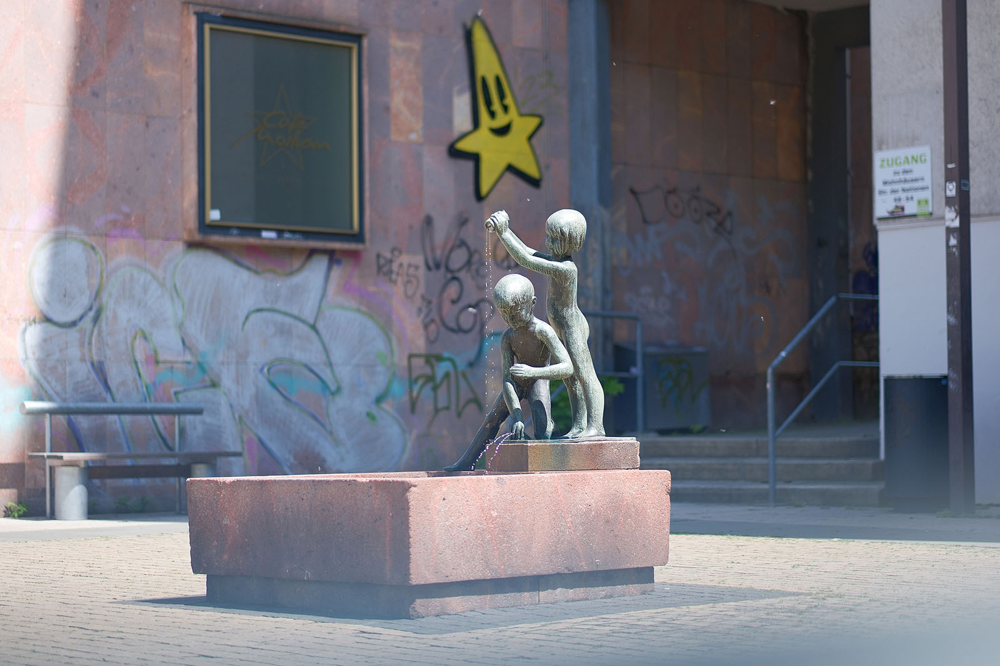

Recherche und Werkbeschreibung: Roman Pilz. Fotografien: Frank Krüger. Text und Bild wechseln sich wie in einem Magazin ab. Ein Klick auf ein Bild öffnet die Großansicht.
Gemeinsam mit zwei anderen Künstlern erhielt Hanns Diettrich 1964 den Auftrag, die wenige Zeit zuvor fertiggestellte Straße der Nationen mit einem Brunnen zu verschönern. Anlass war die große Feier zum Stadtjubiläum - 800 Jahre Chemnitz/Karl-Marx-Stadt von 1165 bis 1965.
Diettrich, Spezialist für Porträts und schon seit den 1920er Jahren in Chemnitz ansässig, wurde mit der Aufgabe einen Brunnen zu gestalten, wohl an die Anfänge seiner Karriere erinnert: Als Schmuck der Uhr im Kassenraum des Chemnitzer Stadtbades gestaltete er bereits vor dem 2. Weltkrieg zwei liegende Sonnenanbeter, die sich nach dem Bad im Wasser neben dem Zifferblatt trocknen. Doch schon die Kleinsten werden vom flüssigen Element magisch angezogen und Eltern wissen, egal wie klein die Pfütze, wie weit das andere Bachufer oder wie hoch die Wellen - Wasser macht einfach Spaß. Finden sich dann auch noch Stöcke, einen Stein oder ein Gefäß lässt sich stundenlang beschäftigt die Zeit vollkommen vergessen.

Der Bildhauer, seit 1939 selbst Vater, hatte bestimmt solche Momente im Sinn, als er seine Brunnenfiguren gestaltete. Ein aus rotem Porphyrtuff gehauenes Wasserbecken steht niedrig über dem Straßenniveau - es erinnert in seiner einfachen, rechteckigen Form an steinerne Wassertröge zum Tränken von Tieren oder öffentliche Brunnen, wie sie früher zur Versorgung mit Trinkwasser oder zur Wäsche dienten. Die zwei Kinder wirken wie später hinzugekommen. Sie erscheinen, als hätten sie an einem heißen Sommertag den Brunnen für sich entdeckt und wären zum Spielen auf den Rand geklettert, wo am Kopfende ein einfacher Zufluss, vielleicht aus einer Quelle, bodennah ständig frisches Wasser in das Becken nachlaufen lässt.

Die zwei Nackedeie, ein Junge und ein Mädchen im Kindergartenalter, versuchen, das Wasser zu bändigen, aber der Druck aus der Leitung vervielfältigt den Wasserstrahl nur und lässt zwischen den Fingern des hockenden Jungen drei kleine Fontänen herausspritzen. Das über dem Jungen breitbeinig stehende Mädchen hat sich dagegen eine Dose mitgebracht und Wasser geschöpft. Nun schüttet sie es mutig über den Kopf des Spielkameraden hinweg, durch zwei Löchlein zurück in das Sammelbecken. Die beiden Kinder animieren sicherlich manch anderen, es ihnen gleichzutun.

Der Zusammenhang mit den zwei anderen Brunnen am Straßenzug wird durch die Verwendung gleicher Materialen und einer ähnlich heiteren Grundstimmung deutlich. Zusammenbetrachtet lässt sich auch das übergeordnete Motiv des Wachstums und der Entwicklung erkennen: Die drei Lebensstufen Kindheit, Jugend und Erwachsensein werden nebeneinander gestellt und stehen symbolisch für Freude und Wachstum der im Sozialismus wiedererbauten Stadt Chemnitz.

Diettrich war schon früher an Wiederaufbauprojekten beteiligt. Für die erste in der Stadt nach dem Krieg neu errichtete Schule in Reichenhain, wo noch zahlreiche Freiwillige aus geborgenem Trümmermaterial die heute unter Denkmalschutz stehende Grundschule errichteten, brachte er um 1950 ein weiteres Kinderbildnis ein: eine Gruppe kleiner Musikanten mit Bandoneon, Flöte und Gitarre aus Muschelkalk.

Wasserspiele
Der Brunnen „Spielende Kinder“ (1965) von Hanns Diettrich an der Straße der Nationen
